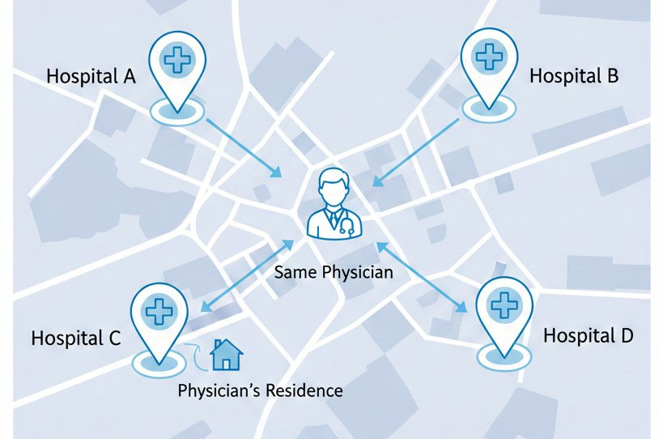
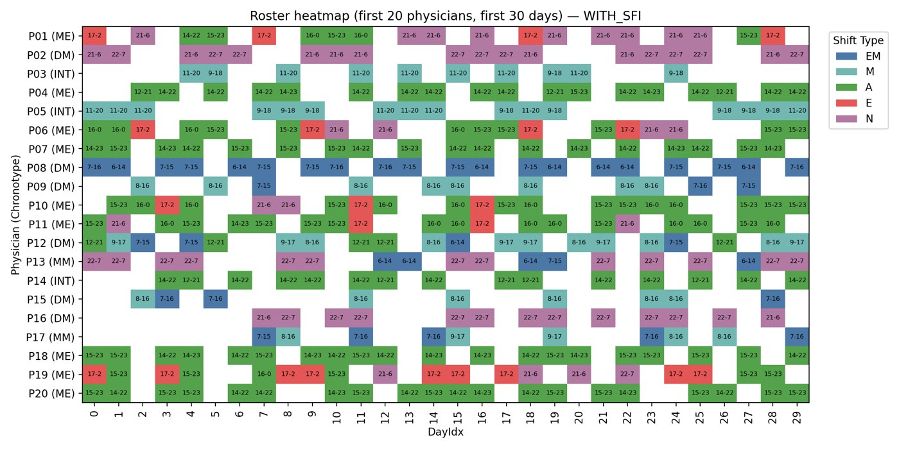
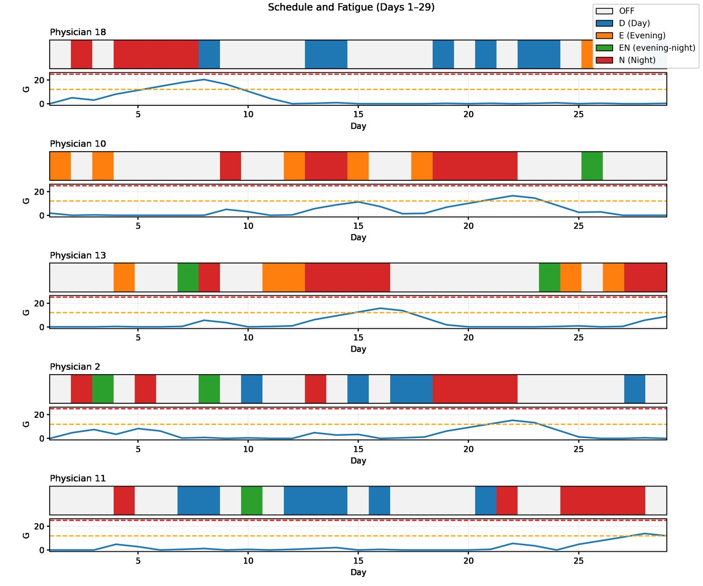
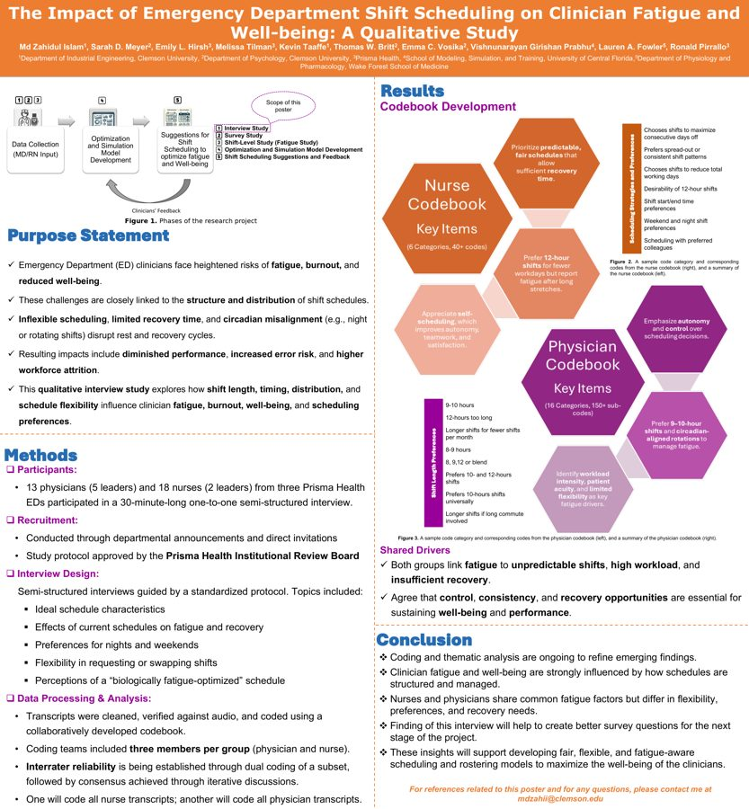
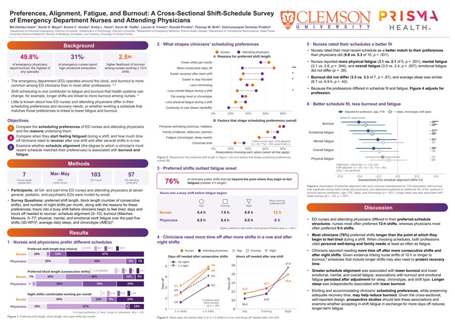

Emergency department scheduling, clinician fatigue, and well-being
My research develops data-driven, fatigue-aware, and preference-based optimization models for healthcare workforce scheduling, with a focus on emergency department physicians and nurses. I combine operations research, mathematical optimization, statistical analysis, and human-factors research to understand how shift schedules affect clinicians' fatigue, sleep, recovery, burnout, and well-being, and to build schedules that account for them.
The work is part of a CDC/NIOSH-funded, multi-institution project with Prisma Health, Clemson University, Wake Forest University School of Medicine, and the University of Central Florida. I bring together evidence from clinician interviews, surveys, historical work schedules, wearable sleep monitoring, and physiological measurements, and use it to design scheduling approaches that meet clinical staffing requirements while balancing individual preferences, fairness, and fatigue-related risk, in support of clinician well-being, patient safety, and efficient operations.
Advisor: Dr. Kevin M. Taaffe, Clemson University.
Prisma Health's emergency physicians rotate among seven emergency department locations. Every schedule has to keep each department staffed around the clock while respecting credentials, rest rules, and leave, and it also shapes how tired physicians get, how fairly nights and weekends are shared, and how well each person's life fits around work. I am working on two connected scheduling problems.

With Dr. Kevin Taaffe and Dr. Hervé Kerivin, and in partnership with Prisma Health, I am building a mixed-integer model in which physicians say not only what they prefer but how much each preference matters to them. Each physician distributes a fixed budget of points across scheduling features such as night shifts, weekend shifts, protected days off, work blocks and recovery after them, shift type, early and late shifts, runs of the same shift type, and paired weekends. More points on a feature means that feature matters more, and the points become physician-specific weights in the objective.
Accepted talk, INFORMS Annual Meeting, November 2026 · manuscript in preparation.
This model builds three-month schedules for physicians across a multi-hospital network with the explicit goal of reducing fatigue. Fatigue is scored with a Shift Fatigue Index that combines how well a shift matches the physician's chronotype (body clock), when the shift ends, and how long it is. The model minimizes total fatigue alongside penalties for unfair sharing of night, weekend, and distant-hospital shifts, departures from shift-bundling or spreading preferences, and over- or under-time.


Presented at the Healthcare Systems Process Improvement Conference (Feb 2026) and the IISE Annual Conference (May 2026).
To ground the models in clinicians' experience, I led a qualitative study with 13 physicians and 18 nurses (including seven leaders) at three Prisma Health emergency departments. I co-designed the interview guide, conducted 30-minute semi-structured interviews on ideal schedules, recovery, nights and weekends, flexibility, and what a "fatigue-optimized" schedule would look like, and coded transcripts with codebooks the team developed (6 nurse categories with 40+ codes; 16 physician categories with 150+ sub-codes), checking interrater reliability on a dual-coded subset.

I led a cross-sectional survey of 103 nurses and 57 attending physicians at seven Prisma Health general, pediatric, and psychiatric emergency departments (March–May 2026). It measured preferred shift length, block length, and night shifts and the reasons behind them; when fatigue sets in during a shift; time off needed to recover; how well clinicians' recent schedules matched their preferences; burnout; physical, mental, and emotional fatigue; sleep; and chronotype.

With S. V. Abrol, V. Prabhu, and K. M. Taaffe, I am evaluating how well large language models can perform inductive thematic analysis of healthcare interviews. Using the 18 nurse interviews and a human-developed reference codebook of 47 codes, we compare Claude Sonnet and Opus at medium and high reasoning-effort settings on conceptual alignment, code coverage, coding specificity, and whether the models reproduce higher-order human interpretations.
At the University of Tennessee Space Institute (2021–2022) I worked on supply chain simulation, learning-based routing, perishable inventory, and production scheduling. See the projects page.